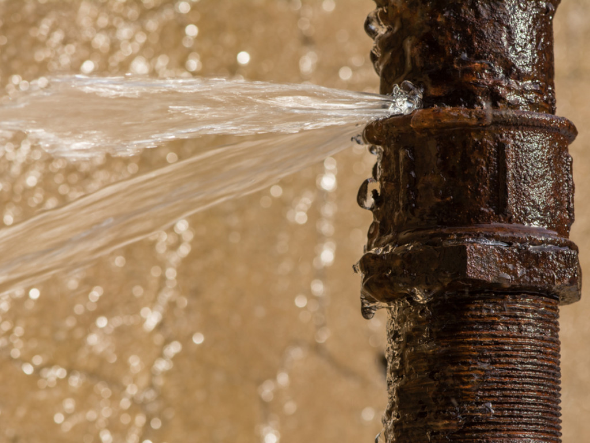

The "Water Extraction and Removal Service" offered by New Method Restoration is a specialized procedure designed to efficiently and effectively remove excess water and moisture from properties. This service is crucial for homes and businesses affected by water-related damages such as flooding, pipe bursts, or severe weather events. Using state-of-the-art equipment and innovative techniques, our skilled technicians ensure rapid removal of water to prevent further damage, mold growth, and to expedite the restoration process. Our commitment to thorough water extraction preserves the structural integrity of properties and safeguards the health and well-being of its occupants.
You are not alone in this. We will guide you through every part of this process, including working with your insurance.
Drying and dehumidification
The "Drying and Dehumidification Service" offered by New Method Restoration addresses the critical aftermath of water damage by ensuring affected areas are thoroughly dried and moisture levels are brought back to safe levels. Excess moisture, if untreated, can lead to mold growth, structural damages, and an array of health concerns. Utilizing advanced drying equipment and professional-grade dehumidifiers, our team meticulously extracts latent moisture from materials and air, restoring a healthy indoor environment. This service not only safeguards the property's structural integrity but also ensures a comfortable and health-conscious space for its occupants.
Mold remediation and removal
The "Mold Remediation and Removal Service" provided by New Method Restoration is an expert solution designed to address mold infestations that can arise from unresolved moisture problems or water damage events. Mold, a potential health hazard and structural threat, demands an immediate and comprehensive approach. Our team of professionals is trained to identify the extent of mold growth, eliminate the source of moisture, and systematically remove the mold using advanced techniques and eco-friendly antifungal agents. Beyond just removal, we aim to restore the affected areas to their original condition, ensuring the safety, health, and peace of mind of our clients.
Structural drying and restoration
The "Structural Drying and Restoration Service" offered by New Method Restoration is a comprehensive approach to address water-impacted structures and materials. Over time, lingering moisture can weaken the foundation and framework of a building, leading to significant structural issues and potential health risks. Our dedicated service begins with a meticulous drying process using advanced equipment, targeting both visible and concealed moisture pockets. Following the drying phase, our team undertakes the restoration process, ensuring that the structural integrity and aesthetic appeal of the affected areas are fully regained. By blending our expertise with cutting-edge technology, we aim to bring properties back to their pre-damage state, ensuring safety and longevity for our clients.
Content cleaning and restoration
The "Content Cleaning and Restoration Service" provided by New Method Restoration emphasizes the meticulous care and rehabilitation of personal and commercial possessions affected by water damage, mold, fire, or other harmful agents. Recognizing that valuable belongings hold both monetary and sentimental significance, our specialized team employs advanced cleaning techniques and state-of-the-art equipment to restore items to their former condition. From furniture and electronics to important documents and artwork, we delicately treat each item, aiming to minimize loss and save memories. Our comprehensive approach ensures that our clients' cherished belongings are not only cleaned but also revitalized, allowing them to remain integral parts of their homes or businesses.
Sewage cleanup and disinfection
The "Sewage Cleanup and Disinfection Service" provided by New Method Restoration is a critical intervention for properties afflicted with sewage-related issues, which can pose significant health threats and structural challenges. Sewage backups or overflows are not just unpleasant; they contain harmful pathogens, bacteria, and toxins. Our team of experts is specially trained to safely and efficiently manage these situations, ensuring the complete removal of sewage and contaminants. Utilizing high-grade disinfectants and advanced cleaning techniques, we meticulously sanitize affected areas, eradicating potential health risks. Our comprehensive approach guarantees not only a visibly clean space but also one that is microbially safe, restoring comfort and security for our clients.
Odor removal and deodorization
The "Odor Removal and Deodorization Service" offered by New Method Restoration addresses the challenges posed by lingering and unpleasant odors that can arise after water damage, mold growth, fire, sewage incidents, or other distressing events. Recognizing that persistent odors can impact the comfort and well-being of inhabitants, our team utilizes advanced techniques and cutting-edge equipment to identify and neutralize the root causes of these odors. Beyond mere masking, our deodorization process eliminates odor-causing particles at their source, ensuring a lasting freshness. Committed to restoring a pleasant indoor environment, we ensure that spaces not only look clean but also smell fresh and are free from any offensive or harmful odors.
Water damage assessment and restoration planning
The "Water Damage Assessment and Restoration Planning Service" offered by New Method Restoration serves as the cornerstone of our comprehensive water damage response strategy. Recognizing the unique nature and complexities of each water damage incident, our experienced team begins with a thorough assessment, employing state-of-the-art tools and methodologies to gauge the severity and extent of damage. This precise evaluation allows us to identify the affected areas, potential risks, and the root causes of the damage. Based on this assessment, we then formulate a tailored restoration plan that optimizes resources and timelines, ensuring efficient and effective rehabilitation. Our holistic approach ensures that properties are restored to their original condition, and owners are well-informed throughout the process, allowing for peace of mind during challenging times.
Reconstruction and repair of damaged areas
The "Reconstruction and Repair of Damaged Areas Service" offered by New Method Restoration focuses on restoring the structural integrity and aesthetic value of properties that have been affected by water damage, fire, mold, or other catastrophic events. Recognizing the distress and disruption such damages can bring, our team of seasoned craftsmen and technicians work diligently to rebuild, refurbish, and revitalize affected areas. We employ modern techniques, premium materials, and a detail-oriented approach to ensure each project not only meets but exceeds original specifications. Our commitment goes beyond simple repairs; we aim to seamlessly integrate the restored portions with the existing structure, making it difficult to discern where damage once lay. Through meticulous planning and execution, we turn challenges into renewed spaces, ensuring our clients can confidently move forward in a restored environment.
Insurance claims assistance and documentation
The "Insurance Claims Assistance and Documentation Service" provided by New Method Restoration is a dedicated service aimed at easing the often daunting insurance claims process for property owners facing damage-related incidents. Navigating the intricacies of insurance paperwork, understanding policy nuances, and ensuring adequate documentation can be overwhelming. Our seasoned team collaborates closely with clients, offering guidance on claim procedures and ensuring all necessary documentation, from photographs to detailed reports, is meticulously prepared and presented. By acting as an intermediary between property owners and insurance companies, we aim to expedite claims processing, ensuring timely settlements and minimizing out-of-pocket expenses. Our commitment is to stand by our clients during challenging times, providing expertise, reassurance, and the crucial support needed to navigate insurance complexities.
The services offered by New Method Restoration, as outlined and described above, are provided on a case-by-case basis. Each situation and client requirement is unique, and our approach is tailored accordingly. Our services are often rendered in conjunction with efforts made by insurance companies. Collaboration with these insurance entities is intended to facilitate the restoration process and ensure the best outcome for our clients. Additionally, we may engage our partner network to provide specialized expertise or resources as needed. While we strive for excellence and complete client satisfaction in every project, outcomes and specific service offerings may vary based on individual circumstances, insurance policy details, and the nature of the damage or issue being addressed.
Are you dealing with a burst water pipe in your home? Don't wait until it's too late! The changing seasons increase the risk of a pipe bursting, causing gallons of water to flood your home and potentially causing mold growth. That's where New Method comes in. Our professional water damage restoration team is available 24/7 and ready to take immediate action to restore your home and proactively prevent any further damage.